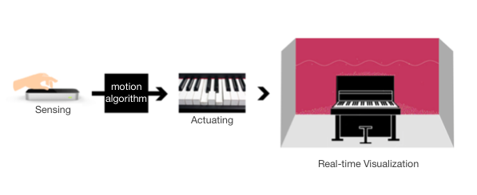
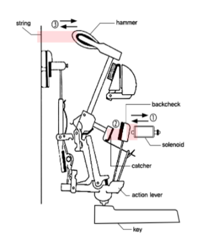

P.N.O. is a new concept of an extended musical instrument which provides visitors with an experience to interact with the piano through sound and visual projection without physical contact. I developed a new interface and mechanism for the musical instrument through motion capture data and real-time visual projection on the acoustic piano.
Processing, Arduino, Design Thinking, Rapid Prototyping
The installation space is split into three zones: the input-zone, output-zone, and visual-projection-zone. In the input-zone, the guests’ finger movement is detected by leap motion while, in the output-zone, the piano produces the actual sound corresponding to the motion data captured in the input-zone. Also, the screen presents a projection mapping in the visual-projection-zone which visualizes the sound notes. The communication among these three separate zones is achieved by the various sensors and actuators installed in the exhibition space. Guests can create the sound along with visual effects on the screen just by swirling or tapping their fingers in the air.
P.N.O produces sound as the leap motion captures each gesture. Guests can play a continuous slide upward or downward by making horizontal swipe gesture while vertical swipe gestures change the scale. The scale options include major, pentatonic, harmonic minor, and blues. Each key note is played depending on the keytap gestures from 10 fingers.
We installed actuators, solenoids, in front of each 88 keys’ back check to produce sound without physical touch on the keys. The detected finger motion captured by the installed sensor goes through the algorithms which ultimately actuate the solenoids. (1) As solenoids push each back checks, the action lever, which was previously a point of action, switches to a point of effort; therefore each key is pressed as if there has been an actual physical touch upon it. At this point, the vertical movement of each key (2)works as a force to push the catcher and (3)make the hammer hit the string and play the sound.
(a) upright piano with actuators installed inside (b) leap motion detecting finger motion
(c) beam projector
(d) speaker (e) two laptops (f) condenser microphone
The main medium is an acoustic piano, which is played using 88 actuators. In order to make 88 piano keys controlled by gesture inputs, I did research on sensors and actuators and tried simulation with different actuators on each key. Depending on the simulation, 88 solenoids were attached which generate a controlled magnetic field when an electric current is passed through it.
P.N.O used the leap motion system which recognizes and tracks hands and fingers. The device operates in an intimate proximity with high precision and tracking frame rate and reports discrete positions and motion. Depending on the user research and feedback from playtesting, we picked 4 gestures to create a intuitive interaction for the piano performance and mapped them into appropriate musical expression.
Based on the Leap Motion API, I made a motion algorithm with keytap, horizontal/vertical swipe, and circle gesture and mapped each input into the outputs for actuators and visualizer. Arduino was used to build the piano controller which can manipulate the whole circuit boards and the real-time visualizer including 2D physics of particles was implemented on Processing.
We presented oscillating string and particle animations by visualizing each key sound created by the finger motion captured by leap motion. The string is a sine wave oscillator, and small particles fall and pile up around it.
- Art&Technology Conference (2015.11)
- 2016 HCI Korea (2016.02)
- 2016 Seoul New Media Festival (2016.08)
2016.02
HCI Korea 2016, Creative Awards
2016.08
Selected Artwork, Seoul New Media Festival(NEMAF)